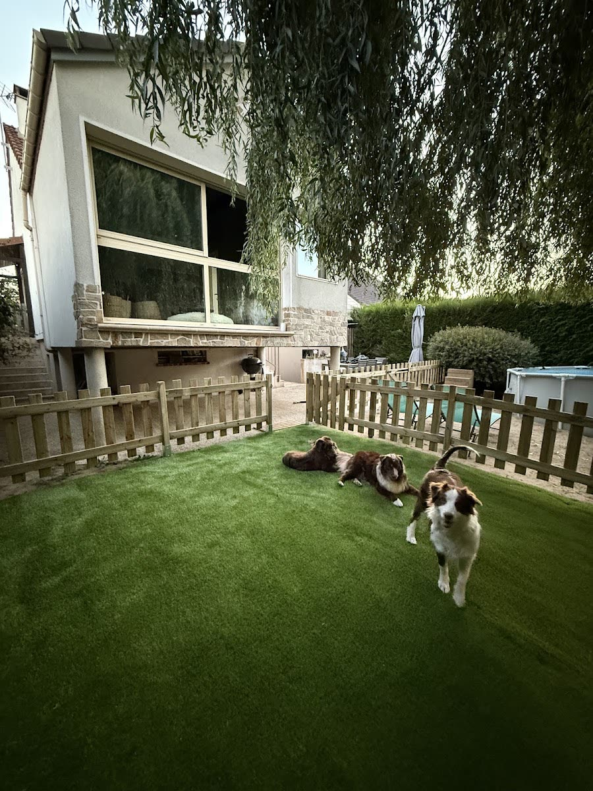

Jour & nuit
La pension familiale
Votre chien vit dans une maison et un jardin aménagés pour les toutous, avec une chambre qui leur est dédiée. Il passe ses journées en balade et au jardin avec ses copains.
- Week-end, vacances, plusieurs semaines
- Photos et vidéos chaque jour
- Toilettage possible avant le retour